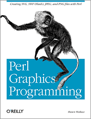

A book published by O'Reilly Media that shows you how to generate GIFs, JPEGs, PNGs, SVGs, and PDFs using Perl and free software. It also showed how to make SWF (Flash) files using the Ming library, which is a little passé now that we have the mxmlc Actionscript compiler.